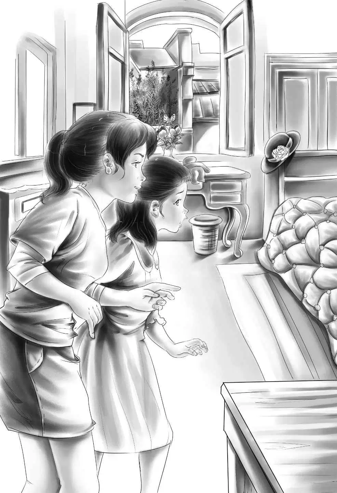

A Cool Welcome
孩子们兴奋极了。管家麦格雷戈太太把一顿丰盛的午餐装进了盒子里，递给杰西。她的脸上带着慈母般的笑容。
班尼看了看盒子：“就算简姑婆给你们的饭不够吃，这顿午餐也够你们顶上两三天了。”
奥登先生开车把姐妹俩送到车站，关切地看着她们并排坐下。
杰西和维莉笑着朝爷爷挥手，直到看不见为止。
姐妹俩坐在火车上，感觉一切既陌生又新鲜，不知不觉几个小时就过去了。她俩注意到一个年轻人正在看书。他个子很高，有着一头柔软的棕色头发和一双棕色的眼睛。他去喝水的时候路过她俩的座位，朝她们微微笑了笑。
姐妹俩也朝他笑了笑。当他再次捧起书的时候，杰西悄悄地对维莉说：“长得挺帅，是吧？”
此后，她们就没有再注意这个年轻人了。第二天清晨，列车开到了赛特维尔。出乎姐妹俩意料的是，年轻人居然开口跟她们说话了：“我也要下车，需要我帮你们拎行李吗？”
“好的，那就太谢谢你了！”杰西说，“那个蓝色和白色的包就是我们的行李。”
“我猜到了。”年轻人笑着说。
他将包拿下来，单手拎着，另一只手则拎着自己的大包。姐妹俩在站台上四处张望，寻找着麦琪。
“很感谢你能帮我们拎包，”维莉说，“你实在是太好了！”
“不用客气。”陌生的年轻人礼貌地回答。
这时，身后传来一个声音：“两位是奥登小姐吗？”
“奥登小姐？”杰西转过身来，“没错，我是杰西·奥登，这是维莉。您是麦琪吗？”
“对，我就是麦琪，见到你们真高兴！”
杰西和维莉俯身拿行李的时候，突然想起了那个年轻人，可是他已经不见了。
“那个人去哪儿了？”杰西问，“就是帮我们拎包的那位？”
“我也不知道，”麦琪说，“他是谁啊？”
“我们以前从没见过他，”杰西说，“不过他真的很热心。”
“很少有人会在这里下车，”麦琪说，“不知道他为什么来赛特维尔。”
“用班尼的话说，他是个‘神秘人’。”维莉微笑着说。
麦琪带她们走出车站，来到一匹黑色的老马跟前。这匹瘦骨嶙峋的老马居然还拉着一辆旧马车。
“上车吧！”麦琪说，“只有一个座位，不过挤得下我们三个。”
麦琪一抖缰绳，老马昂起头，慢悠悠地往前走去。
“它只能走着回去，”麦琪说，“它跟我们以前的马可不一样。以前我们有赛马，还有一群牛，地里还种着小麦。过去的农场真不错，可现在你们的简姑婆没法儿打理它了。你们知道她整天卧床不起吗？”
“知道，爷爷跟我们说了。”
“那他有没有跟你们说过，简自己绝食，还不让我吃东西？”
“说了，太糟糕了！”维莉说。
老马来到一座褐色的旧房子前，在后门口停了下来。姐妹俩下了马车，麦琪打开后门，让她们进了厨房。

“你们的简姑婆就在那边，”麦琪说，“把包放下吧！我去她的房间告诉她一声。”
“你的孙女们来了。”麦琪说。杰西和维莉看不见和麦琪说话的那个人。
姐妹俩轻轻地走进卧室，只见一个瘦小的女人半坐在一张又大又高的床上。她非常瘦，脸上没有一丝笑容——甚至连看到她们姐妹俩的时候都没有笑。
“你们就是詹姆斯·奥登的孙女吗？”她扯着嗓门问。
杰西大胆地走到床边说：“爷爷很担心您，简姑婆。”
“担心？呸！”瘦小的老太太吼道。可是，她还是忍不住喜欢上了杰西叫的那一声“简姑婆”。多少年了，从来没有人这么亲切地跟她说过话。
她抬起头问了一句：“那个女孩怎么了？不会说话吗？”
“会啊，”维莉微笑着回答，“只是我怕说多了您会厌烦呢！”
奥登小姐一句话也没有说，可是她忍不住想：“我怎么会厌烦这样温柔的声音呢？”
这时，麦琪开口道：“我把她们俩安排到大卧室，可以吗？”
“随便哪儿都行。”简姑婆说完，扭过头朝着墙躺下了。
麦琪走到门外，冲姐妹俩点点头，示意她俩也出来。
“见过这么粗鲁的人吗？”她问姐妹俩。
“没见过，”杰西说，“但我们觉得她很可怜。”
麦琪带着姐妹俩上了楼。
她们走进一个带有许多窗户的大房间，房里有一张又高又大的床。
“简姑婆到底怎么了？”维莉说，“她病得厉害吗？”
麦琪看了看维莉说：“其实我觉得她压根儿就没事。”
“可她为什么总是呆在床上呢？”
“她现在没力气起床，”麦琪回答道，“她没什么念想，也没想着好好生活，所以才不好好吃饭。”
“可我们得吃饭了。”杰西说。
“我也饿了。”维莉附和道。
“那么，我们下楼去厨房吧！”杰西说。
她们下楼时，麦琪温和地说：“你们姐妹俩就把这里当自己的家好了。”
来到厨房，麦琪朝窗户外瞅了瞅。她发现老马仍然站在后门口。
“天哪，我忘了拴马了！”麦琪突然喊道。话音未落，她就冲出门去，把姐妹俩留在了屋里。
这时，维莉扭头看了看简姑婆的房间——门关上了！
“瞧，杰西，”她轻声说，“肯定是简姑婆关的门。这么说，只要她愿意，她就能下床来活动。”